Naive Bayes
When an owner files a safety complaint they describe what happened in their own words. This section asks whether those words alone are enough to tell that a crash occurred — without knowing the make, the model, or anything else about the vehicle.
Overview
Naive Bayes is a supervised classifier, which means it learns from examples where the answer is already known. It is built on Bayes' theorem, a rule for updating a belief once evidence arrives. Applied to a complaint the question becomes: given the words in this narrative, what is the probability that it describes a crash? The classifier answers by combining two things it measured during training — how common each class was overall, and how characteristic each word is of each class.
Training is simple counting. For every word in the vocabulary the model counts how many times it appeared in crash narratives and how many times in non-crash narratives, then converts those counts into probabilities. No iteration or optimisation happens; one pass over the data is enough, which is why Naive Bayes trains in seconds on tens of thousands of documents.
Prediction multiplies those probabilities together. For a new complaint the model takes the prior probability of each class and multiplies it by the probability of seeing each observed word given that class, then picks whichever class scores higher. The word "naive" refers to the assumption built into that multiplication: it treats every word as independent of every other word once the class is known. That assumption is plainly false — "seat" and "belt" are not independent — but the classifier still performs well, because it only needs the ranking of the two scores to be right, not the scores themselves.
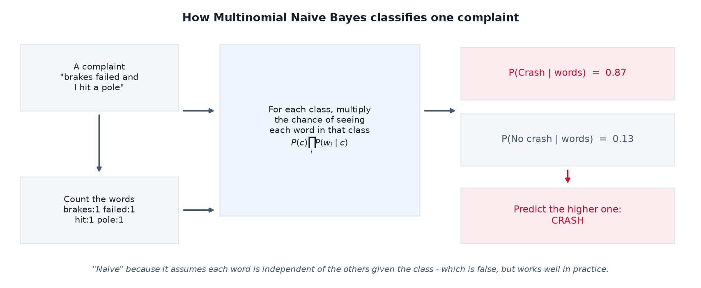
Why smoothing is required
The multiplication above has a fatal weakness. If a single word in a new complaint was never seen in the training examples for a class, its probability for that class is zero, and because the scores are products, one zero drives the entire class score to zero. A single unfamiliar word would veto an otherwise overwhelming case. Since real vocabulary is effectively unbounded, this is not a rare edge case but a routine occurrence.
The fix is Laplace smoothing, controlled by a parameter usually called alpha: add a small constant to every word count before converting to probabilities. Every word then has a small but non-zero probability in every class, no single unseen term can veto a prediction, and the model degrades gracefully instead of collapsing. Larger alpha pulls the estimates toward a uniform distribution, which reduces variance but blurs genuine distinctions, so the value is a trade-off rather than a constant. The Results section measures this directly on the project's own data.
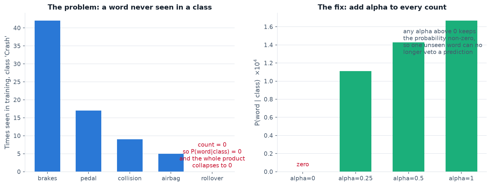
Multinomial and Bernoulli Naive Bayes
The two variants differ in what they consider a feature. Multinomial NB models counts: it asks how many times each word appeared, so a narrative mentioning "brake" four times supplies stronger evidence than one mentioning it once. It expects non-negative integer features, which is exactly what a word-count matrix provides, and it is the standard choice for text of reasonable length.
Bernoulli NB models presence or absence: every feature is reduced to a yes-or-no, and repetition is discarded. The important difference is subtler than dropping counts, though. Bernoulli explicitly uses the words that are absent as evidence, multiplying in a term for every vocabulary word the document does not contain, which Multinomial ignores entirely. That makes Bernoulli better suited to short documents where presence is informative and repetition is noise, and it is why the two can disagree on the same text. Both are fitted on the identical split below.
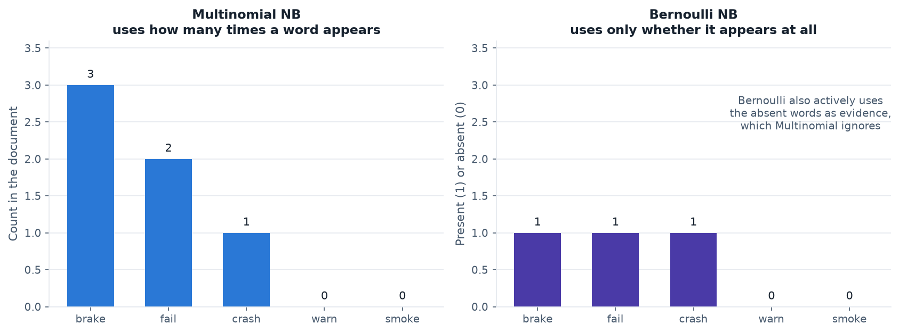
Data Prep
Supervised learning requires labelled data: every training example must carry the known answer. That is what separates this section from the clustering work in Module 2, where no labels were available to the algorithm at all. Here the label comes from the complaint record itself — the federal form has a field recording whether a crash occurred — so the answer is recorded fact rather than an interpretation added later.
Narratives shorter than five words were removed, since a handful of tokens cannot support a text model, leaving 83,282 labelled complaints. Only 4.74% of them describe a crash, and that imbalance shapes everything that follows.
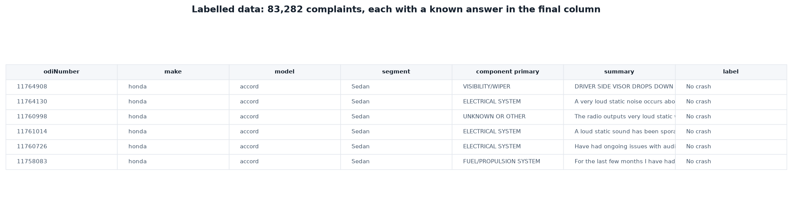
Why the training and testing sets must be disjoint
The data is split into a training set that the model learns from and a testing set used only to measure it. The two must share no rows. A model that is tested on examples it was trained on is being asked to recall rather than to generalise, and it will report an accuracy that cannot be reproduced on anything new. Decision trees make this especially stark, since a sufficiently deep tree can memorise its training data perfectly and score 100% on it while being useless in practice.
The split here is 75% training, 25% testing, drawn with
train_test_split using a fixed random seed so it reproduces
exactly. It is stratified on the label, which forces both sets to carry
the same 4.74% crash proportion; without stratification, random chance could
leave the rare class badly under-represented in one of them. The split produced
62,461 training and 20,821 testing complaints, and the code asserts that
zero complaint IDs appear in both rather than assuming it.
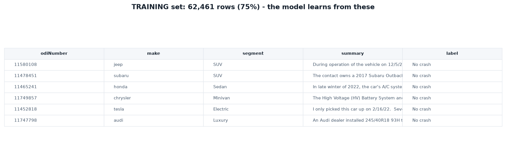
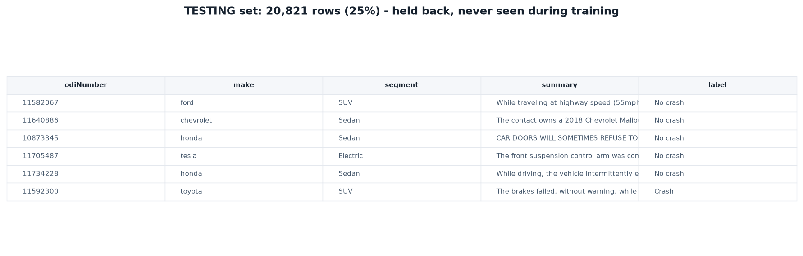
One further precaution matters for text. The vocabulary was built with
CountVectorizer fitted on the training set only, then applied
unchanged to the test set. Fitting the vectoriser on all the data first would
let information about the test documents leak into the model's vocabulary, which
is a subtle but real form of the same mistake.
Data and code. Labelled data: nb_labeled_sample.csv · Training sample: nb_train_sample.csv · Testing sample: nb_test_sample.csv · Metrics: nb_results.csv · Smoothing sweep: nb_smoothing_sweep.csv
Code
The analysis is Python, in
naive_bayes_analysis.py.
Because scikit-learn's MultinomialNB requires numeric input, the
narratives are converted to a document-term matrix with
CountVectorizer, limited to the 6,000 most frequent terms, dropping
English stop words and anything appearing in fewer than five documents. The
resulting matrix holds non-negative integer counts, which is precisely the input
Multinomial NB is defined for. BernoulliNB is fitted on the same
matrix with binarize=0.5, which converts counts to presence flags.
A majority-class baseline is included deliberately, because without it an
accuracy figure on imbalanced data is impossible to interpret.
Results
| Model | Accuracy | Precision (Crash) | Recall (Crash) | F1 (Crash) |
|---|---|---|---|---|
| Multinomial NB | 94.41% | 0.452 | 0.830 | 0.585 |
| Bernoulli NB | 95.17% | 0.494 | 0.806 | 0.613 |
| Majority-class baseline | 95.26% | 0.000 | 0.000 | 0.000 |
The baseline is the most important row in that table. A model that ignores the text entirely and answers "no crash" every single time achieves 95.26% accuracy — higher than Multinomial Naive Bayes. It is also completely useless: it finds none of the crashes. This is what severe class imbalance does to accuracy as a measure, and it is why the confusion matrix and the per-class figures carry the real information here.
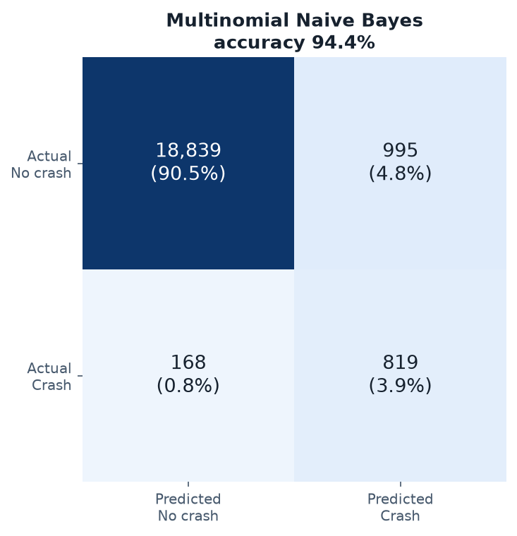
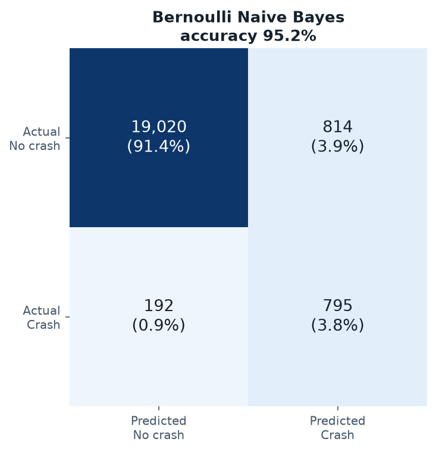
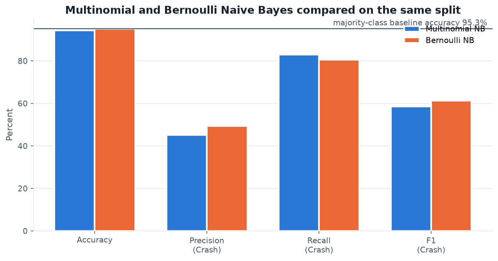
Smoothing, measured
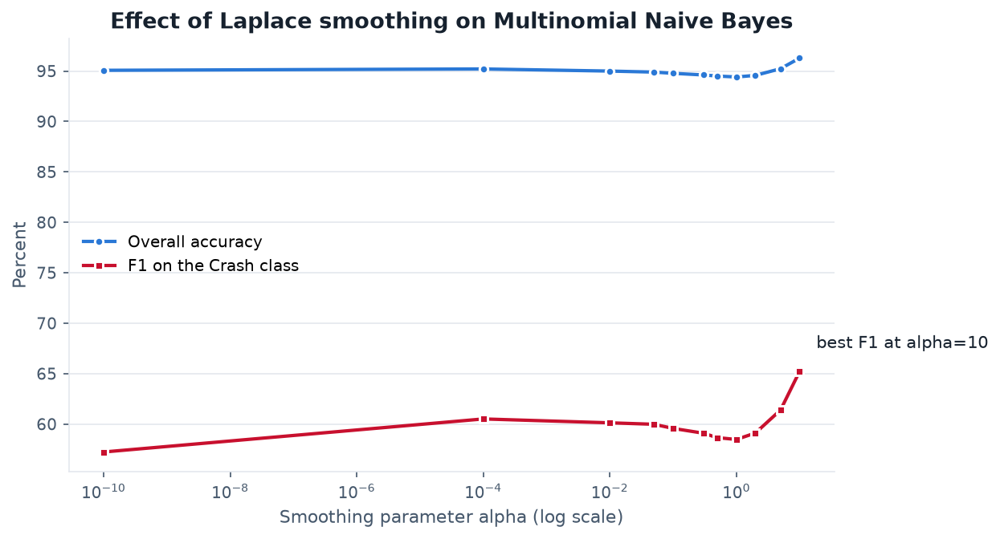
What the model learned
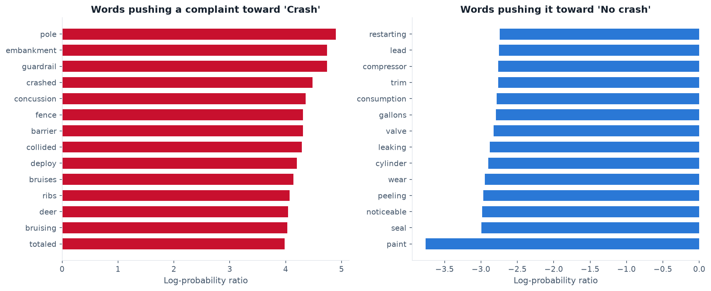
Conclusions
The clearest finding is that owners describing a crash write differently from owners describing a fault, and the difference is sharp enough for a very simple method to detect. The words that give it away are not technical terms but physical nouns — the things vehicles hit. People write about poles, embankments, guardrails and fences, and about concussions and bruises. The language of a non-crash complaint is the language of maintenance: peeling paint, a leaking seal, oil consumption. Nobody designed these two vocabularies; they emerged from counting words in eighty thousand accounts.
Practically, this means the free-text field in a safety complaint carries far more information than it is currently used for. A regulator receives these narratives as prose to be read individually by a human being. The result here suggests that a method simple enough to explain on one page can read all of them at once and correctly flag more than four out of five crash-related reports. That would not replace human judgement, but it would be a reasonable way to decide what a human should read first.
The honest limitation is precision. Catching 83% of crashes costs roughly a thousand false alarms in a test set of twenty thousand, so fewer than half the complaints the model flags actually involve a crash. For a screening tool that decides what to examine next, that trade is probably acceptable: missing a genuine crash report is the more serious error. For anything automated it would not be.
Finally, the comparison with the baseline is itself a conclusion about how safety data should be read. A number that sounds excellent — 95% accuracy — can describe a model that has discovered nothing at all, simply because the thing being predicted is rare. Rare outcomes are exactly what vehicle safety is about, and any claim of accuracy about them deserves the question: compared to what?